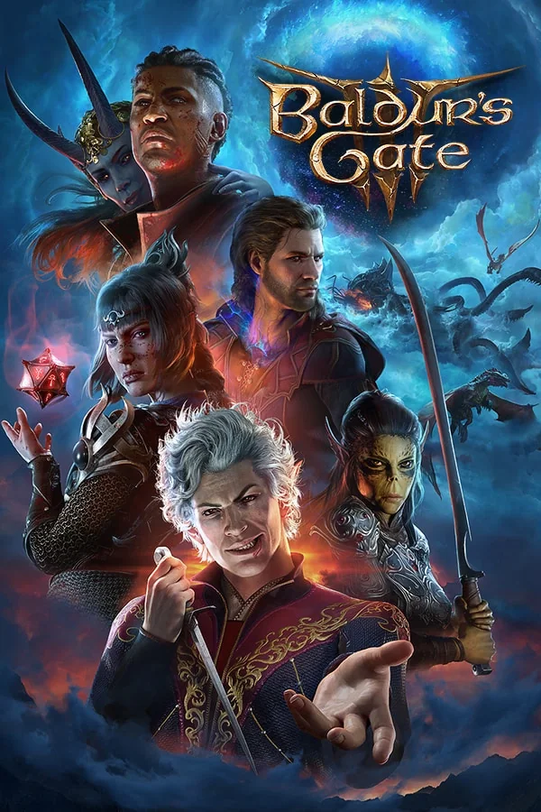
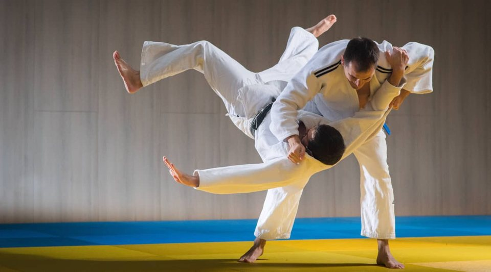
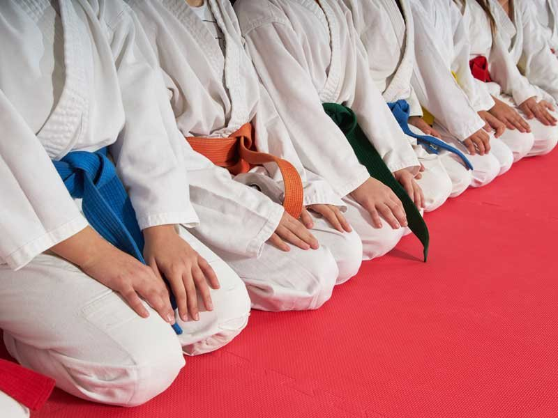

Fire Emblem Fortune’s Wave
Uno de los juegos a los que me gusta dedicar tiempo para desconectar y sumergirme en otro mundo.
Uno de los juegos a los que me gusta dedicar tiempo para desconectar y sumergirme en otro mundo.

Disfruto explorando, conociendo a los personajes y tomando decisiones que dan forma a mi propia aventura.

Una forma de compartir partidas con amigos, coordinarse en equipo e intentar que el nexo que caiga sea el contrario.

Me gusta imaginar lugares, personajes e historias que cobran vida alrededor de la mesa. Cada aventura es una oportunidad de descubrir un mundo diferente.

Las partidas son una excusa para reunirnos, reírnos y construir una historia entre todos. Los planes que salen mal también suelen convertirse en buenos recuerdos.

Interpretar un personaje permite improvisar y ponerse en otra piel. Entre conversaciones y decisiones inesperadas, siempre hay espacio para un poco de teatro.

El judo combina actividad física, técnica y concentración. Practicarlo me permite moverme, aprender y dedicar un rato a algo fuera de las pantallas.

Compartir lo aprendido y ayudar a otras personas a mejorar es otra forma de disfrutar del judo. Explicar una técnica también invita a entenderla mejor.